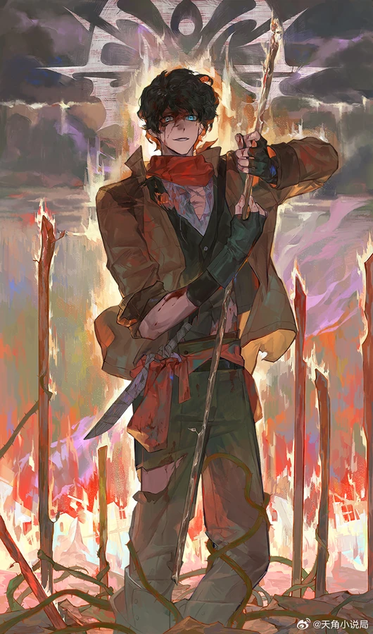

Lumian Lee is the main protagonist of Circle of Inevitability. He was a Major Arcana of the Tarot Club codenamed The Chariot. He was formerly a Minor Arcana under The Magician, with the code name Seven of Wands.
This page includes major-spoiler information from the linked source article. The fact fields below are transcribed from that article’s character infobox.Overview
Lumian Lee is the main protagonist of Circle of Inevitability. He was a Major Arcana of the Tarot Club codenamed The Chariot. He was formerly a Minor Arcana under The Magician, with the code name Seven of Wands.
The page uses the source article’s current naming, status, and progression terminology rather than the older roster shorthand.
Appearance
Role & affiliations
Aliases and titles
- Walking Mysticism Catastrophe Detector
- Mysticism Illiterate
- Lion
- Seven of Wands
- Trash Can
- Lumina Lee
- Li Ming
- Godson/Goddaughter
Affiliations
- Church of the Ruler of Calamity
- Tarot Club
- Church of the Fool
- Sick Church
- Aurora Order
- Iron and Blood Cross Order
- Savoie Mob
- Curly-Haired Baboons Research Society
Occupation(s)
- Great Old One
- God
- An Angel of Church of the Fool
- A leader of the Savoie Mob
- Adventurer
- Candidate Oracle of the Aurora Order
- Priest of the City of Calamity
Religion(s)
- Church of the Fool
- Church of the Eternal Blazing Sun
- Church of the God of Steam and Machinery
- True Creator
Pathway & abilities
Pathway: Calamity of Destruction
Recorded progression: Not listed

Image gallery

Sources
Profile facts were checked against the Lumian Lee article on the Lord of the Mysteries Wiki. The linked source is fan-maintained and may change; it also contains spoilers for Lord of Mysteries and Circle of Inevitability.
Portrait and pathway artwork is shown for reference; credit belongs to the original creators.